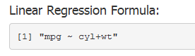
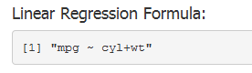

- Shiny App
- 'mtcars' dataset
- Linear Regression
- Running the App
Exploratory Study of 'mtcars' using Linear Regressions
A Shiny App
tankokhua
Engineer
Introduction
Shiny App
- A 'Shiny' app is used to build the user interface to study 'mtcars' dataset.
- The objective is to study the impact of certain aspects of the car designs on fuel consumption.
- This app helps the user to perform quick first pass analysis to determine the possible regressors.
- A 'Shiny' app can be built with minimal effort.
'mtcars' dataset
- The 'mtcars' dataset has 11 variables.
## [1] "mpg" "cyl" "disp" "hp" "drat" "wt" "qsec" "vs" "am" "gear"
## [11] "carb"
A data frame with 32 observations on 11 variables.
| Abbrev. | Description |
|---|---|
| mpg | Miles/(US) gallon |
| cyl | Number of cylinders |
| disp | Displacement (cu.in.) |
| hp | Gross horsepower |
| drat | Rear axle ratio |
| wt | Weight (lb/1000) |
| qsec | 1/4 mile time |
| vs | V/S |
| am | Transmission (0 = automatic, 1 = manual) |
| gear | Number of forward gears |
| carb | Number of carburetors |
Linear Regression
Running the App
 

Results
- The output panel consists of
- Coefficients of linear regression
- Residual Plots
- The coefficients show which regressors are significant.
- The residual plots give an indication of the 'correctness' of the model.